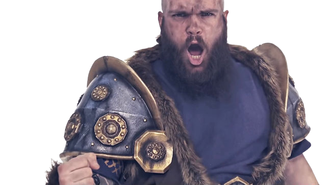
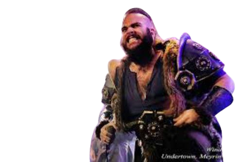

Hvað er Wind Rose
Wind Rose er ítalsk power metal hljómsveit stofnuð árið 2009 í Pisa, Toskana. Hljómsveitin hefur gefið út fimm stúdíóplötur frá 2009 til 2023 sú nýasta er Warfront sem kom út í júní árið 2022.
Hljómsveitin spilar fyrst og fremst blöndu af power metal og Folk Metal . laugin þeirra eru inblásin af verkum J.R.R. Tolkiens, sérstaklega Dverga Tolkiens,
og laugin þeirra eru um dverga og þeir klæða sig í búninga til að líta út eins og dvergar í laugunum sínum og textarnir í laugunum eru um dverga vegna þessa hefur tónlistin sem þeir búa til oft kölluð Dwarven Metal. sem er góð lýsing af hljómsveitinni
Saga Wind Rose'ar
Í mars 2010, nokkrum mánuðum eftir stofnun þeirra, gaf Wind Rose út geisladisk sem heitir "Demo 2010" sem var framleiddur af Cristiano Bertocchi. Þann 28. ágúst 2012 gaf Wind Rose út sína fyrstu Shadows Over Lothadruin í fullri lengd í gegnum Bakerteam Records (efri deild Scarlet Records).
Árið 2013/2014 fluttu þeir fjölda kynningarsýninga í Evrópu sem studdu Wintersun, Finntroll og Epica beint. Cristiano Bertocchi gekk til liðs við hljómsveitina sem bassaleikari árið 2014 áður en hljómsveitin fór í stúdíó til að taka upp aðra breiðskífu.
Í febrúar 2015 tóku þeir þátt í Eluveitie's Origins Evróputúr og önnur stúdíóplata þeirra Wardens of the West Wind var gefin út af Scarlet Records. Í október spiluðu þeir einnig sem stuðningur við spænsku sýningar Ensiferum á One Man Army tónleikaferð sinni um Evrópu. Eftir þessar sýningar helgaði Wind Rose allt árið 2016 til að skrifa nýtt efni. Árið 2017 skrifaði hljómsveitin undir samning við Inner Wound Recordings um þriðju plötu sína Stonehymn. Það var gefið út í maí. Fyrsta myndbandið sem var gefið út var „The Wolves' Call“ og síðan „To Erebor“ sem veitti hljómsveitinni meiri vinsældir og náði til milljóna tengiliða á Facebook þeirra og á YouTube útsölustöðum. Wind Rose var síðan boðið að taka þátt í mikilvægum málmhátíðum eins og Bloodstock (Bretlandi) og Masters of Rock (Tékklandi).
Í janúar 2018 var hljómsveitin beðin um að ferðast um Japan með Ensiferum og í apríl og maí 2018 fóru þeir á Path to Glory Evróputúrinn með Ensiferum og Ex Deo. Í desember 2018 tilkynnti Wind Rose samning við Napalm Records og upptöku á nýrri plötu. Þann 6. júní 2019 gaf Wind Rose út fyrstu smáskífu á Napalm: „Diggy Diggy Hole“, lag sem var upphaflega skrifað og flutt af leikja YouTubers The Yogscast. Frá og með júní 2022 hefur myndbandið verið skoðað meira en 34 milljón sinnum. Platan Wintersaga kom út 27. september 2019.
Þann 8. mars 2022 tilkynnti hljómsveitin að ný plata þeirra, Warfront, yrði gefin út 10. júní.

þessi mynd er frá "Albúminu WarFront"

þessi mynd er frá Apríl Tourinu
.jpg) Þetta er mynd 1
Þetta er mynd 1
.jpg) Þetta er mynd 2
Þetta er mynd 2
.jpg) Þetta er mynd 3
Þetta er mynd 3
.jpg) Þetta er mynd 4
Þetta er mynd 4
.jpg) Þetta er mynd 5
Þetta er mynd 5
.jpg) Þetta er mynd 6
Þetta er mynd 6